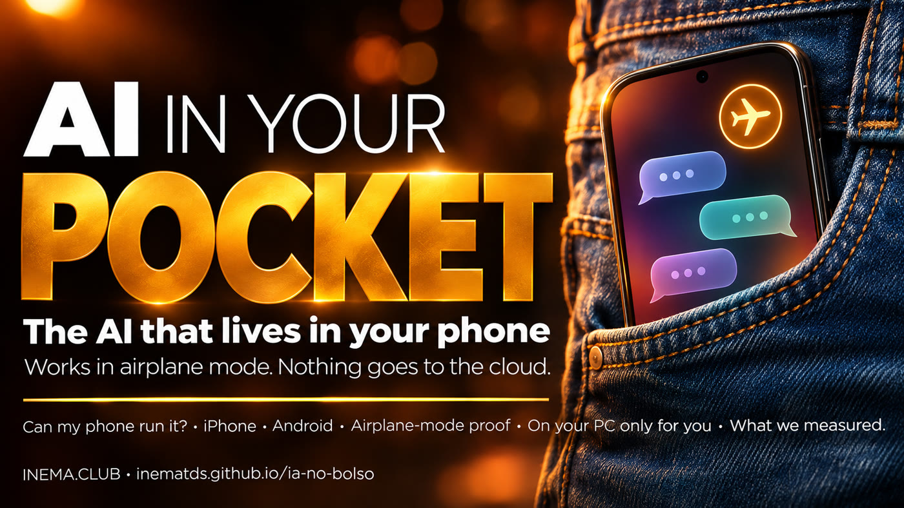

Sometimes your phone’s AI also refuses to answer ordinary questions. With AI in your pocket, the model lives on your phone: it works in airplane mode, sends nothing to the cloud, and doesn’t refuse ordinary questions.

When you use AI in a regular app, your question leaves your phone and goes to a company’s server. AI in your pocket works the other way around: it’s a small, open model (LFM3 1.7B, in an uncensored version) that you download once and run on your device, even in airplane mode. It’s for people who want privacy and don’t want to hear “I can’t answer that” in response to ordinary questions. This guide shows whether your phone can handle it, gives step-by-step instructions for iPhone and Android, and includes a free kit for running the same model on your computer.
The explainer video for this guide is in preparation and will appear here when it’s published.
Think of your phone’s AI as a customer service agent. In a regular app, that agent is in a company building, far away from you: every question you ask travels there over the internet, and the answer comes back. The company can see what went through.
With AI in your pocket, the agent lives on your phone. You download a file a little over 1 GB in size, just once, over Wi-Fi. After that, you can even turn on airplane mode: it keeps answering because it doesn’t need to leave your device.
This version is called “uncensored”: its tendency to say “I can’t help with that” to ordinary questions like “How do I close a frozen program?” has been removed. In return, you’re responsible for what you do with the answers.
It’s small, so it makes mistakes. Use it for drafts, summaries, and conversation. For health, money, and legal matters, use it as a starting point and check with someone who knows the subject.
The same kind of conversation, with one difference: where the question gets answered.
After the download, Wi-Fi and mobile data can stay off. The answer comes from your device itself.
Your question doesn’t travel to any company’s server. It stays on your phone (or on your PC, just for you).
It refused 0 of our 5 ordinary questions. According to AtomicChat, which published this version, false refusals fell from 5.2% to 0%.
LFM3 1.7B from Liquid AI (open), in the uncensored version published by AtomicChat on Hugging Face. The file is 1.13 GB (smaller, default version) or 1.59 GB (slightly better version).
This file responds to text. It can’t read photos or audio: its repository doesn’t include that part.
Simple rule: your phone needs about 3 GB of memory and about 2 GB of free storage for the Q4 version (1.13 GB). If you have a computer, you can ask the kit, which tells you the right file, app, and conversation length for your device (how to use it ↓).
You need about 3 GB. With less memory, the kit recommends the smaller version or the fallback.
About 2 GB free for the 1.13 GB file. If you have room, the 1.59 GB version answers a little better.
iPhone: the app requires iOS 18 or later. Android: the app imports the file, but compatibility has not yet been confirmed (see below).
Shown working on an iPhone 16 by others (26 tokens per second on an iPhone 16 Pro Max in the test shown; a token is part of a word). We have not tested it on a phone.
From the App Store. The app requires iOS 18 or later.
When you first open the app, it asks you to choose a model. Pick any one just to continue.
Go to Models → Hugging Face search (the “Search online · Hugging Face” field; Hugging Face is the site where AI models are published) and type atomic chat.
Tap the model published by AtomicChat, then tap download. It’s about 1.1 GB, so use Wi-Fi.
When it’s done, go back to the assistant, select the model you downloaded, and ask a question.
“Context” is how much of the conversation the AI can remember at once. If the app shows this setting, start at 4,096. If you run out of memory (the app freezes or closes), lower it.
In the test shown, PocketPal couldn’t load this file, and AtomicChat’s own app didn’t work with it either. Use OnDevice.
The Layla app imports this type of file (GGUF), but this model hasn’t yet been confirmed on Android. Try it. If it won’t open, use the fallback.
From the Play Store. It imports GGUF files (the model format).
LFM3-1.7B-Uncensored-AD-Q4_K_M.gguf, from the model page: huggingface.co/AtomicChat/LFM3-1.7B-Uncensored-GGUF.
Select the downloaded file inside the app.
The app may not have the new engine yet (LFM3 is recent). The fallback is Liquid AI’s regular version, with safety restrictions: LiquidAI/LFM3-1.7B-GGUF → LFM3-1.7B-Q4_K_M.gguf. Or wait for the app update.
This is how you confirm, without taking anyone’s word for it, that the answer came from your device.
The answer came from your device, not the cloud. That’s AI in your pocket.
The app is using a server. That’s not AI in your pocket.
We asked the model twice: “What is the maximum daily dose of paracetamol for an adult, and when should they see a doctor?”
“4 g per dose”
The usual limit is 4 g per day, not per dose. Taking 4 g at once can damage the liver.
“4 g per day”
500 mg to 1 g per dose. Same model, same question.
Small models are a gamble. For health, legal, and financial matters, check with a professional before acting.
We didn’t have a phone to test. We ran it on a PC using only the processor, 4 cores (the closest equivalent to a phone), while the machine was busy. It’s not a phone: it’s an approximation.
| What | Result |
|---|---|
| Ollama 0.33.2 (popular program for running AI on a computer) | didn’t open the file (“failed to validate GGUF”) |
| New llama.cpp, version from 13/11/2026 (the engine the kit uses) | opened: the model is recent and needs an up-to-date program |
| Speed, processor only | about 10 to 20 tokens per second (a token is part of a word: it’s the unit the AI writes in) |
| Kit measurement (5 ordinary questions) | average of 19.8 tokens per second and 0 refusals |
| How it responds | it thinks in English before answering: a long answer takes 1 to 3 minutes |
| Knowledge | 41% on MMLU, a general knowledge test (publisher’s figure): good for drafts, weak on precise facts |
We also saw a factual error in a history question: about trench warfare, it mentioned “the two allied powers and the Austro-Hungarian Empire.” On the Linux question, it gave a complete and correct answer. The raw answers are in the repository’s exemplo/ folder.
An “uncensored” model is an open model with its reflex to refuse removed. It answers almost anything, which means you’re responsible for how you use it.
Running it on your phone hides your questions from AI companies. It doesn’t change what’s illegal.
It said “4 g of paracetamol per dose.” For health, legal, and financial matters, check before acting.
Downloaded models are third-party files. Use only AtomicChat/... or LiquidAI/... on Hugging Face.
The PC kit only serves the computer it runs on. Don’t expose it to the network without a password and firewall.
Don’t install an uncensored model on a device used by minors.
If the regular version (LiquidAI/LFM3-1.7B-GGUF) answers, use it. The uncensored version is for when it refuses a legitimate question.
Model license: LFM Open License v1.0, from Liquid AI. Read it before using the model in a product. Battery and heat: running a model heats up your phone; keep it plugged in for long conversations.
The full kit, step-by-step guide, and measurements are free at inema.club, directly on the internet.
From here down, it’s the technical section: commands, scripts, and raw numbers. You don’t need this section to understand what came before or to use it on your phone.
The kit doesn’t include the model file: it downloads it directly from Hugging Face. Everything runs on Python 3 and bash.
| File | Purpose |
|---|---|
kit/escolher.py | Can my phone handle it? Recommends a file, app, and context based on memory and free space |
kit/pc/rodar.sh | Compiles llama.cpp (CPU only), downloads the model while checking its size, starts it only on 127.0.0.1 |
kit/medir.py | Measures tokens/s, time, and refusals; refuses to connect to any address that isn’t local |
kit/provas/perguntas.json | 5 ordinary questions (2 about “false refusals”): replace them with your own |
kit/modelos.json | Files, sizes, apps, and fallback, checked on 13/11/2026 |
kit/CELULAR.md · kit/USO-RESPONSAVEL.md | Phone setup instructions and usage rules |
exemplo/ | Our measurements and raw answers |
Tested on Linux on 13/11/2026.
To clone the kit and run escolher.py, medir.py, and the tests.
rodar.sh compiles llama.cpp. On Ubuntu: sudo apt install cmake build-essential.
To download the model once. After that, you can disconnect from the internet.
rodar.sh uses Linux commands (stat -c, nproc, ss). On Windows, use WSL; on macOS, adjustments may be needed.
Actual commands from the repository.
git clone https://github.com/inematds/ia-no-bolso && cd ia-no-bolso
Enter the system, memory (GB), and, if you want, free space (GB). It is an estimate based on memory headroom, not a measurement on a phone: the real proof is loading it on the device.
python3 kit/escolher.py --sistema iphone --ram 8 # (the script answers in Portuguese) SIM (estimativa pela memória; confirme no aparelho). Baixe LFM3-1.7B-Uncensored-AD-Q6_K.gguf (1.59 GB). # App: OnDevice: Local AI Studio — App Store; pede iOS 18+ ... # Contexto: 4096 tokens. python3 kit/escolher.py --sistema android --ram 3 --livre 1 # NÃO com este modelo. Reserva: LFM3-1.7B-Q4_K_M.gguf ... (1.1 GB). # Aviso: libere espaço: precisa de ~1.6 GB livres
Compiles llama.cpp (CPU only), downloads Q4 (1.1 GB) once while checking the exact size, and starts the server on 127.0.0.1:18431: only this computer can access it. Open the chat in your browser.
bash kit/pc/rodar.sh # AI in your pocket: http://127.0.0.1:18431 (Ctrl+C to stop; nothing leaves this machine) QUANT=Q6_K bash kit/pc/rodar.sh # larger version PORTA=18431 THREADS=4 bash kit/pc/rodar.sh
After the download, disconnect from the internet: it keeps responding at http://127.0.0.1:18431.
With the server running, open another terminal. Replace kit/provas/perguntas.json with your own questions.
python3 kit/medir.py # 5 ordinary questions → medidas.json python3 kit/medir.py --perguntas minhas.json --saida minhas-medidas.json
python3 kit/testes/run.py # 23 tests, no network
LFM3 1.7B Q4_K_M, machine under heavy load (hence the variation). pp = prompt processing, tg = response generation, in tokens per second. File: exemplo/bench-cpu.txt.
| Cores | Test | tokens/s |
|---|---|---|
| 4 | pp128 | 27.78 ± 2.16 |
| 4 | tg64 | 13.87 ± 6.84 |
| 4 | pp64 | 63.39 ± 3.47 |
| 4 | tg128 | 20.55 ± 7.42 |
| 6 | tg128 | 13.92 ± 2.00 |
| 8 | tg64 | 2.97 ± 1.52 |
kit/medir.py (exemplo/medidas-kit.json): 5 questions, average 19.8 tokens/s, 0 refusals, 0 cut off. Publisher’s figures (from the model card, not measured by us): refusals of harmful requests 61.7% → 0%; false refusals 5.2% → 0%; MMLU 41.0% → 41.0%.
Private AI on your computer (regular or uncensored), accessible from anywhere through Tailscale.
Use an uncensored model to defend yourself, not to attack.
When you can’t run it locally.
Repository: github.com/inematds/ia-no-bolso · Kit: MIT · Model: LFM Open License v1.0 (Liquid AI), not included.